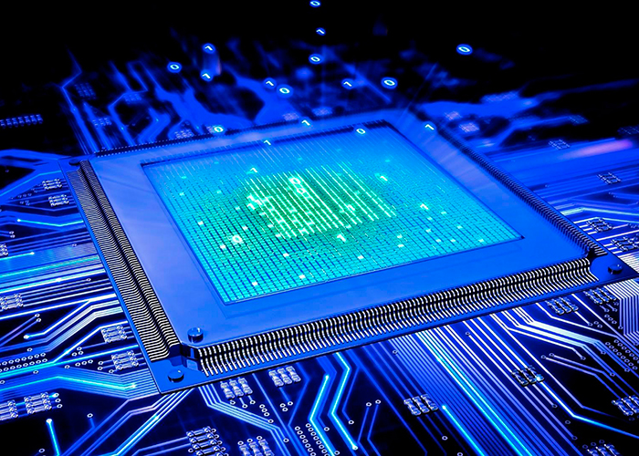
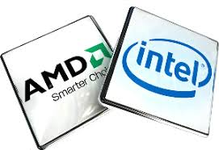

El Computadora
Un computador dispone de tres componentes principales para efectuar las tareas
descritas anteriormente:
- Unidades de E/S para aceptar información y comunicar los resultados.
- Un procesador para procesar la información.
- Una memoria para almacenar la información y las instrucciones.
Es necesario un cuarto componente que conecte entre sí el resto de los componentes:
un sistema de interconexión que permita mover la información entre
los tres componentes del computador.


Resumimos a continuación las tareas que debe realizar cada uno de los componentes
del computador:
- Procesador: se encarga de gestionar y controlar las operaciones del computador.
- Memoria: almacena información (los programas y los datos necesarios para
ejecutarlos).
- Sistema de E/S: transfiere los datos entre el computador y los dispositivos
externos, permite comunicarse con los usuarios del computador, introduciendo
información y presentando resultados, y también permite comunicarse
con otros computadores.
- Sistema de interconexión: proporciona los mecanismos necesarios para
interconectar todos los componentes.
Ir a ver mi tabla
Abrir documento pdf